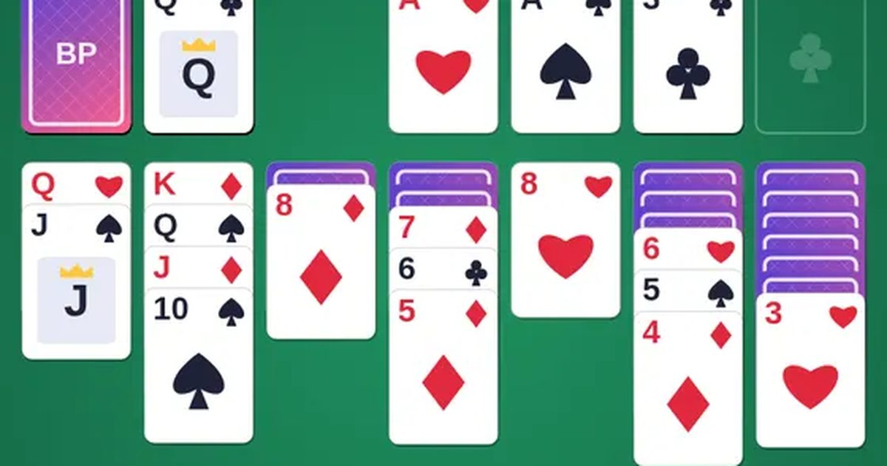

솔리테어
Solitaire
카드 · 혼자무료설치 없음폰 · PC
▶ 지금 바로 하기로그인 없이 브라우저에서 바로 시작돼요
어떤 게임인가요?
누구나 아는 혼자 하는 카드놀이(클론다이크). 빨강·검정을 번갈아 내림차순으로 쌓고, 무늬별로 A부터 K까지 위로 모으면 승리! 끌어서 옮기거나 눌러서 자동으로 옮겨요.
목표 · 흩어진 카드 52장을 무늬별로 A부터 K까지 위쪽 네 칸에 모두 올리세요.
이렇게도 찾아요
카드놀이카드 게임혼자 카드 게임솔리테어 클론다이크solitaireklondikecard game
#솔리테어 #카드게임 #추억의게임
게임 방법
- 아래 일곱 줄에는 빨강·검정을 번갈아, 한 단계 낮은 숫자를 쌓아요 (예: 검정 8 위에 빨강 7).
- 줄의 맨 아래 카드가 옮겨지면 밑에 엎어진 카드가 뒤집혀요.
- 펼쳐진 카드 묶음은 통째로 옮길 수 있어요. 빈 줄에는 K(또는 K로 시작하는 묶음)만 놓을 수 있어요.
- 위쪽 네 칸에는 같은 무늬를 A, 2, 3 … K 순서로 올려요.
- 왼쪽 위 더미를 누르면 카드를 1장(또는 3장) 넘겨요. 다 넘기면 다시 처음부터.
- 점수: 위로 올리기 +10 · 넘긴 카드를 아래로 +5 · 카드 뒤집기 +5 · 위에서 다시 내리기 -10. 이기면 빠를수록 큰 보너스.
등장하는 것들
- 빨강 · 하트 · 다이아
- 검정 · 스페이드 · 클로버
- J · Q · K · 왕관 그림 카드
- 뒷면 · 아직 모르는 카드
공략 팁
- 엎어진 카드가 많은 줄부터 풀어 주세요.
- 빈 줄은 K를 놓을 수 있을 때까지 아껴 두세요.
- A와 2는 보이는 즉시 위로 올리세요.
- 막히면 💡 힌트, 실수하면 ↶ 되돌리기 (무제한).
 추억의 핀볼
추억의 핀볼 막대 파이터
막대 파이터 골목 대장
골목 대장 공룡 달리기
공룡 달리기 투호 던지기
투호 던지기 블록 퍼즐
블록 퍼즐